SECCIÓN
Síntomas - Caja de cambios automática
Importante: Utilice las tablas de síntomas solo si se dan las siguientes condiciones:
- No hay DTC activados.
- Los módulos de control se pueden comunicar a través del enlace de datos de serie.
- Revise el funcionamiento del sistema para familiarizarse con las funciones del sistema.
Inspección visual/física
Inspeccione los componentes del sistema que estén visibles o a los que pueda accederse fácilmente y compruebe si se ha producido algún daño o avería que podría causar el síntoma.
Fallos intermitentes
Es posible que la causa de las condiciones intermitentes sean conexiones o cableado eléctrico defectuoso.
Lista de síntomas
Consulte el procedimiento de diagnóstico de síntomas de las siguiente lista para diagnosticar el síntoma:
- Diagnóstico de líquido
- Comprobación del líquido de la transmisión
- Presión del líquido alta o baja
- Fugas del líquido de la caja de cambios automática
- Diagnóstico de fuga de líquido
- Diagnóstico de vibraciones y ruidos
- Chirridos/zumbidos
- Análisis de vibraciones y ruidos
- Diagnóstico del convertidor de par
- Diagnóstico de rendimiento de gama
- No entra la posición de estacionamiento
- No entra ninguna velocidad en ninguna gama
- No se acopla el engranaje de marcha atrás
- Diagnóstico de efectividad de calidad del cambio
- Cambio Garage brusco
- Cambio tardío o brusco a 1ª, 2ª, 3ª y 4ª
- Cambio brusco a 1ª y marcha atrás
- Cambio a 2ª y 6ª tardío o brusco
- Cambio tardío o brusco a 3ª, 5ª y marcha atrás
- Cambio brusco a 4ª, 5ª y 6ª
- Patrón de cambio
- No entra la 1ª ni la marcha atrás
- No entran la 1ª, 2ª, 3ª y 4ª marcha
- No entra la 2ª y 6ª marcha
- No entra la 4ª, 5ª, 6ª marcha
- No entra la 3ª, 5ª y marcha atrás
- Diagnóstico del convertidor de par
- Diagnóstico del convertidor de par
- No se aplica el embrague del convertidor de par
- No se libera el embrague del convertidor de par
- Síntoma no encontrado o No se detecta ningún síntoma
- Comprobación del líquido de la transmisión
- prueba en carretera
- comprobación de presión de línea
Verificación de reparación del diagnóstico
- Instale cualquier componente o conector que haya quitado o sustituido durante el diagnóstico.
- Realice cualquier procedimiento de ajuste, programación o configuración que sea necesario cuando se retire o sustituye un componente o módulo.
- Borre los DTC.
- Quite el contacto durante 60 segundos.
- Si la reparación estaba relacionada con un DTC, replique las Condiciones para hacer aparecer el DTC y utilice los registros de avería/contexto de congelación (según convenga) para verificar que no se vuelve a activar el DTC. Si el DTC se vuelve a registrar o aparece otro DTC, vaya al DTC relacionado y realice el procedimiento de diagnóstico apropiado. O, si la reparación estaba relacionada con el síntoma, replique las condiciones bajo las cuales ocurrió la anomalía señalada por el cliente para verificar la reparación. Si se vuelve a repetir la anomalía señalada por el cliente, realice la rutina de diagnóstico de síntomas adecuada.
Comprobación del conjunto del módulo de control de la transmisión y válvulas solenoide de control
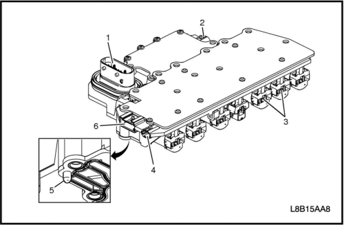


- Compruebe si se detectan las siguientes condiciones en los conectores del conjunto de válvulas solenoide de control (en carrocería y TCM) y patillas (1, 2, 4, 6):
- Daños
- Patillas dobladas
- Residuos
- Lengüeta de retención rota
- Contaminación
- Asegúrese de que no hay residuos metálicos dentro de los conectores, cerca de las patillas de los terminales.
- Compruebe si hay contaminación o residuos metálicos en los cables (3) de las solenoides del conjunto de válvulas solenoide de control (en carrocería y TCM).
- Compruebe si en las dos lengüetas (5) de retención del plato del filtro del conjunto de válvulas solenoide de control (en carrocería y TCM) hay grietas y asegúrese de que la tensión es la adecuada cuando se acopla el plato del filtro.
Prueba de entrada de la velocidad del eje de salida/velocidad del eje de entrada del conjunto del módulo de control de la transmisión y la válvula solenoide de control
Herramientas necesarias
- Kit de pruebas de los terminales aprobado J 35616 GM
- Generador de señal variable J 38522
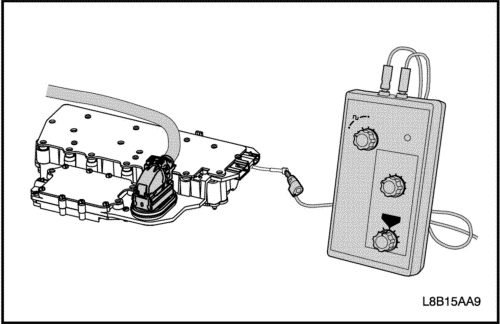
El propósito de esta prueba es proporcionar una señal simulada del sensor de velocidad de entrada/salida (ISS/OSS) a los circuitos de entrada ISS/OSS del conjunto de válvulas solenoide de control (en carrocería y TCM).
- Desconecte el conector del cableado del ISS/OSS del conjunto de válvulas solenoide de control (en carrocería y TCM).
- Utilice el J 35616, conecte el J 38522 al circuito de señal ISS o OSS afectado en el conjunto de válvulas solenoide de control (en carrocería y TCM).
- Ajuste la señal del J 38522 a 8 voltios, la frecuencia a 120 y el ciclo de trabajo porcentual a 50.
- Con el contacto dado, observe cualquiera de las señales del ISS o OSS del parámetro del scanner.
- El parámetro de la señal debería mostrar entre 100-400 rpm. Si no está dentro de esta gama, el conjunto de válvulas solenoide de control (en carrocería y TCM) no lee la señal de entrada correctamente y está averiado.
Limpieza del conjunto del módulo de control de la transmisión y la válvula solenoide de control
El procedimiento de limpieza del conjunto de válvulas solenoide de control (en carrocería y TCM) es una rutina basada en un software específico que se encuentra en el TCM. Este procedimiento se activa con el scanner y se utiliza para hacer girar a las solenoides y válvulas del conjunto de válvulas solenoide de control con el fin de eliminar residuos y liberar las válvulas después de que se haya activado un código de diagnóstico de avería (DTC) de rendimiento. Cuando finaliza el procedimiento de limpieza, el criterio de activación del DTC se ejecuta de nuevo y se vuelve a comprobar si se ha corregido la anomalía que ha provocado el DTC.
- Conduzca hasta que el vehículo alcance una temperatura de 70 -90 °C (158 -194 °F).
- Con un scanner, seleccione el Procedimiento de limpieza de servicio. Inicie el procedimiento de limpieza.
- Cuando finalice el procedimiento de limpieza, quite el contacto durante 30 segundos.
Prueba de rendimiento de la solenoide del conjunto del módulo de control la transmisión y la válvula solenoide de control
Herramientas necesarias
- Plato de pruebas de la solenoide de control DT-48616
- Cableado del adaptador DT 48616-10
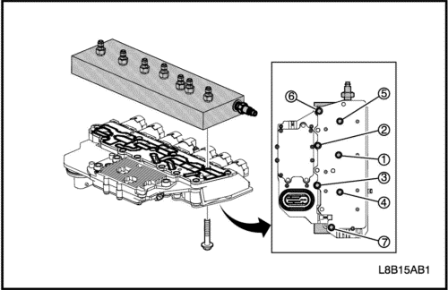
El propósito de este procedimiento es comprobar si se detecta alguna condición de bloqueo grave en posición de apertura o cierre en el conjunto de válvulas solenoide de control (en carrocería y TCM). El DT-48616 se atornilla al conjunto de válvulas solenoide de control (en carrocería y TCM) en la superficie de montaje del cuerpo de la válvula. El aire presurizado pasa al bloque de pruebas de aluminio a través del conducto de la solenoide del conjunto de válvulas solenoides de control (en carrocería y TCM) y regresa a un calibrador de presión en el bloque de pruebas. El calibrador de presión indica abierto si la presión del aire pasa a través de la solenoide o cerrado si es imposible que pase aire a través de la solenoide. Se utiliza un scanner para activar y desactivar las solenoides. Si se observa el calibrador de presión, se puede determinar el funcionamiento de la válvula. La presión de aire de taller recomendada para esta prueba es de 90-100 psi.
- Desmonte el conjunto de válvulas solenoide de control (en carrocería y TCM) de la transmisión.
- Atornille el DT-48616 al conjunto de válvulas solenoide de control (en carrocería y TCM) en la superficie de montaje del cuerpo de las válvulas. Utilice los tornillos y arandelas suministrados con la herramienta para sujetar el bloque de pruebas. Apriete los tornillos a 5N·m (44 lb pulg.) utilizando una secuencia de par alternante descentrado.
- Instale el calibrador de presión en el puerto de aire de la solenoide afectada. Componente de referencia a la tabla del puerto de aire.
- Conecte el conducto de presión de aire de taller al puerto de entrada de psi de aire DT-48616.
- Conecte el DT-48616-10 al vehículo y al conjunto de válvulas solenoide de control (en carrocería y TCM).
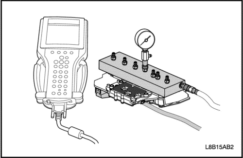
Aviso: No active las solenoides durante más de dos minutos o podrían resultar dañadas.
- Con el contacto dado, solicite la conexión y desconexión de la solenoide en cuestión con un scanner. Observe el calibrador de presión del aire y compruebe si se produce algún cambio en la presión al conectar y desconectar la válvula. La válvula debería permitir que la presión del aire fluyera a través del puerto de la válvula hacia el calibrador y ofrecer la lectura de la presión en el calibrador. Si la válvula está bloqueada en posición de cierre, no se dará ningún cambio de presión. Conecte y desconecte la válvula solenoide varias veces para determinar el estado de la válvula solenoide en cuestión. Libere la presión del aire en el calibrador entre las pruebas de presurización.
Bloque de pruebas de rendimiento de solenoides del conjunto de válvulas solenoide de control (en carrocería y TCM) para identificación de componentes
Puerto del componente en el bloque de pruebas
COMPONENTE
|
PUERTO EN EL BLOQUE DE PRUEBAS
|
Contacto dado, motor apagado (KOEO) Estado normal
|
|
Solenoide de PC 2
|
F
|
Flujo psi completo hacia el calibrador
|
|
Solenoide de PC 3
|
G
|
Flujo psi completo hacia el calibrador
|
|
Solenoide de PC 4
|
B
|
No hay flujo psi hacia el calibrador
|
|
Solenoide de PC 5
|
C
|
No hay flujo psi hacia el calibrador
|
|
Solenoide de cambio
|
D
|
Flujo psi completo hacia el calibrador
|
|
Sin solenoide de control de presión
|
A
|
Flujo psi completo hacia el calibrador
|
|
Solenoide de PC del TCC
|
E
|
No hay flujo psi hacia el calibrador
|
Importante: Con el contacto dado y el motor apagado (KOEO), el TCM normalmente alternará entre la conexión y desconexión de algunas de las solenoides de transmisión con el fin de mantener limpios y libres de residuos los puertos y las solenoides. La función de oscilación de pequeña amplitud es una actividad normal y provocará que las válvulas alternen rápidamente entre la posición de apertura y cierre cuando se encienda el TCM. Esto puede provocar que el calibrador de psi fluctúe al abrirse y cerrarse las válvulas. Esto puede provocar que salga aire hacia los puertos donde no está conectado el calibrador de psi a medida que se conectan y desconectan las solenoides. Drene el exceso de líquido de la transmisión del TCM antes de acoplar el componente al bloque de pruebas y tome precauciones cuando introduzca aire en la entrada de aire del bloque de pruebas.
Adaptadores de aprendizaje rápido de servicio
Adaptaciones de aprendizaje rápido de servicio es un procedimiento para 6 cambios automáticos de velocidad, en el que se ejecutan una serie de pruebas para permitir que el módulo de control de la transmisión (TCM) "aprenda" las características de embrague individuales. Una vez se han aprendido los datos de embrague, la función Adaptaciones de aprendizaje rápido de servicio los traduce en celdas de datos adaptativos, que el TCM utiliza para controlar embragues durante los cambios.
EL scanner proporciona el inicio del procedimiento de Adaptaciones de aprendizaje rápido de servicio. Este procedimiento se debe utilizar después de reparar la transmisión. El procedimiento de Adaptaciones de aprendizaje rápido de servicio se debe ejecutar cuando se haya llevado a cabo una de las siguientes reparaciones en el vehículo. Si no se realiza el procedimiento después de una de las siguientes reparaciones puede ocasionar un mal funcionamiento de la transmisión, así como la activación de DTC relacionados con la transmisión:
- Mantenimiento interno de la transmisión
- Sustitución del conjunto de válvulas solenoide de control (en carrocería y TCM)
- Actualización de calibración/software del TCM
- Cualquier mantenimiento llevado a cabo en respuesta a una anomalía en la calidad del cambio
Importante: Asegúrese de que se cumplen las siguientes condiciones antes de realizar el procedimiento de Adaptaciones de aprendizaje rápido de servicio:
- Las ruedas motrices están bloqueadas
- El freno de estacionamiento está puesto.
- El freno de servicio está puesto.
- Acelerador al 0% y no se ejerce control externo de RPM del motor
- La temperatura del líquido de transmisión (TFT) es de 70-100 °C (158-212 °F)
- El selector de velocidades ha cambiado de Estacionamiento a Marcha atrás 3 veces para poder purgar el aire de los embragues de marcha atrás.
- Utilice el scanner para ir al apartado "Adaptaciones de aprendizaje rápido de servicio" seleccionado los siguientes comandos:
- F3: Función especial
- F1: Controles de salida de la transmisión
- Adaptadores de aprendizaje rápido de servicio
Importante: Si en cualquier momento durante el procedimiento no se dan las condiciones necesarias, puede detenerse "Adaptaciones de aprendizaje rápido de servicio" y es posible que sea necesario iniciar el proceso desde el principio.
- Utilice es scanner para realizar el procedimiento "Adaptaciones de aprendizaje rápido de servicio".
Importante: Se distinguen 3 fases para llevar a cabo correctamente el procedimiento de "Adaptaciones de aprendizaje rápido de servicio":
- Configuración de la prueba ESTACIONAMIENTO
- Modo DIRECTA
- Modo MARCHA ATRÁS
Estas fases se inician automáticamente y son controlados por el scanner. El scanner mostrará instrucciones al operador mientras se realiza el procedimiento. Siga las instrucciones que aparecen en el scanner según convenga. A continuación se muestra una breve descripción de cada una de las 3 fases.
Configuración de la prueba ESTACIONAMIENTO
Mientras la transmisión está en ESTACIONAMIENTO, "Adaptaciones de aprendizaje rápido de servicio" se preparará para los ciclos de prueba. La preparación de la prueba incluirá las comprobaciones de criterios de diagnóstico, comprobaciones de seguridad, comprobaciones del estado del vehículo y, a continuación, realizará funciones de preparación de pruebas de transmisión internas tales como el purgado de aire del embrague. El scanner dará instrucciones al operador para que este se limite a seleccionar la marcha de estacionamiento y aplique el freno.
Modo DIRECTA
Precaución: Bloquee las ruedas antes de seleccionar DIRECTA. Mientras esté en DIRECTA, si el scanner pierde la comunicación o se desconecta, el vehículo podría moverse hacia adelante. Si no bloquea las ruedas podrían provocarse daños personales o materiales.
Una vez se ha completado la configuración de ESTACIONAMIENTO, el scanner solicita al conductor que seleccione DIRECTA. Cuando DIRECTA esté seleccionado, el TCM acopla los embragues individuales con el fin de que se memorice el volumen del embrague, los límites de llenado de alimentación completa y las compensaciones de presión. El TCM solo llevará a cabo esta prueba una vez. Aunque ejecute el procedimiento "Adaptaciones de aprendizaje rápido de servicio" varias veces siempre obtendrá idénticos resultados, por lo que no se aporta nada nuevo.
Modo Marcha atrás
Precaución: Bloquee las ruedas antes de seleccionar MARCHA ATRÁS. Mientras esté en MARCHA ATRÁS, si el scanner pierde la comunicación o se desconecta, el vehículo podría moverse hacia atrás. Si no bloquea las ruedas podrían provocarse daños personales o materiales.
A continuación, el scanner solicita al conductor que seleccione MARCHA ATRÁS. El TCM acopla los embragues individuales con el fin de que se memorice el volumen del embrague, los límites de llenado de alimentación completa y las compensaciones de presión. El TCM solo llevará a cabo esta prueba una vez. Ejecutar el procedimiento "Adaptaciones de aprendizaje rápido de servicio" varias veces siempre dará idénticos resultados.
Importante: Una vez finalizado el procedimiento "Adaptaciones de aprendizaje rápido de servicio", la transmisión permanecerá en punto muerto.
- Una vez finalizado el procedimiento, apague el motor y el TCM. Perderá comunicación con el scanner.
- Una vez finalizado el procedimiento, apague el motor y el TCM. Perderá comunicación con el scanner.
- Vuelva a poner el motor en marcha. De esta manera se completará el procedimiento de "Adaptaciones de aprendizaje rápido de servicio".
- Vuelva a poner el motor en marcha. De esta manera se completará el procedimiento de "Adaptaciones de aprendizaje rápido de servicio".
Localización y resolución de problemas
Si no se ejecuta "Adaptaciones de aprendizaje rápido de servicio" y se dan las condiciones mencionadas arriba, asegúrese de que:
- La TFT esté entre 70-100 °C (158-212 °F).
- Los frenos y el interruptor de freno funcionan correctamente.
- No hay DTC activos.
- Acelerador cerrado y las RPM del motor aumentan por encima de 1.500 en "Configuración de la prueba Estacionamiento" o al iniciar los modos de prueba.
- El interruptor de posición Estacionamiento/Punto muerto está debidamente ajustado y funciona correctamente.
- El control de presión de línea puede proporcionar 1.000 KPa y está dentro de las especificaciones.
- El vehículo no se mueve o vibra excesivamente.
- Los embragues están ensamblados correctamente.
Comprobación del líquido de la transmisión
Procedimiento de comprobación del líquido de la transmisión:
Este procedimiento comprueba el nivel y el estado del líquido de la transmisión.
Aviso: Utilice solo líquido de la transmisión Dexron VI. Si no utiliza el líquido adecuado pueden provocar daños internos en la transmisión.
Importante: Asegúrese de que la transmisión contiene suficiente líquido para poder arrancar el vehículo con seguridad y sin dañar la transmisión. Con el vehículo apagado y la temperatura del líquido de la transmisión aproximadamente en 20°-25°C (68° - 77°F) debe haber, al menos, suficiente líquido como para drenar a través del orificio de nivel de líquido. Con esta comprobación se asegurará de que hay suficiente líquido en el colector para llenar los componentes cuando arranque el vehículo.
Procedimiento de comprobación del nivel
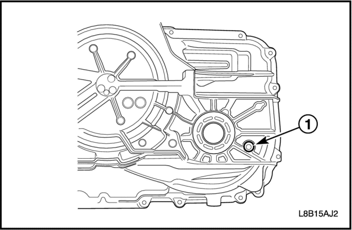
- Ponga el motor en marcha.
- Pise el freno y desplácese por las diferentes marchas de la palanca de cambios, deteniéndose unos 3 segundos en cada una de ellas. A continuación desplace la palanca de cambio a ESTACIONAMIENTO (P).
- Deje el motor en ralentí a 600-850 rpm durante al menos 3 minutos para permitir que desaparezca la espuma del líquido y que se estabilice el nivel del líquido. Suelte el pedal de freno.
- Mantenga el motor en marcha y observe con un scanner la temperatura del líquido de la transmisión (TFT).
Sugerencia
Si la lectura del TFT no muestra la temperatura necesaria, deje que el vehículo se enfríe o condúzcalo hasta que se alcance la TFT adecuada. Si la temperatura del líquido está por debajo de la gama especificada, realice el siguiente procedimiento para aumentar la temperatura del líquido hasta dicha especificación.
Conduzca el vehículo en 2ª hasta que la temperatura del liquido llegue a la temperatura especificada.
Aviso: El nivel del líquido de la transmisión debe comprobarse cuando la TFT esté entre 85° - 95°C (185° - 203°F). Si la TFT no está a está temperatura, conduzca el vehículo o permita que el líquido se enfríe, según convenga. El ajuste del nivel del líquido con una TFT fuera de este rango hará que el líquido de la transmisión esté por debajo o por encima del nivel adecuado. TFT>95°C=por debajo del nivel adecuado, TFT<85°C=por encima del nivel adecuado. Una transmisión con un nivel de líquido por debajo del adecuado ocasionará daños o desgaste prematuros en componentes. Una transmisión con un nivel de líquido por encima del indicado hará que este se salga del orificio de evacuación en forma de espuma de líquido o cavitación de la bomba.
- Eleve el vehículo en un elevador. El vehículo debe estar nivelado, con el motor en marcha y la palanca de cambio en marcha ESTACIONAMIENTO.
- Con el vehículo al ralentí, retire el tapón de ajuste del nivel de aceite (1). Deje que se vacíe todo el líquido.
- Si el líquido fluye de forma constante, espere hasta que el líquido comience a gotear.
- Si no sale líquido, añada líquido hasta que gotee.
Aviso: Es importante añadir la cantidad exacta de líquido. Demasiado líquido o una cantidad insuficiente del mismo pueden provocar el mal funcionamiento de la transmisión y una avería prematura en la transmisión.
- Compruebe el color del aceite. El líquido de la transmisión debería ser rojo o marrón oscuro.
- Si el color del líquido es muy oscuro o negro y huele a quemado, compruebe si hay un exceso de partículas metálicas u otros residuos. Una pequeña cantidad de material de "fricción" es "normal". Si nota grandes trozos y/o partículas metálicas, limpie el refrigerador de aceite y los conductos del refrigerador y revise la transmisión. Si no encuentra ninguna señal de daño interno de la transmisión, cambie el líquido, repare el refrigerador de aceite y limpie los conductor del refrigerador.
- Si el líquido tiene aspecto turbio, lechoso o contaminado con agua, esto indica que hay contaminación del refrigerante del motor o del agua. Consulte Refrigerante del motor/agua en la transmisión.
- Vuelva a instalar y apretar el tapón de ajuste del nivel de aceite (1) a 12 N•m (106 lb-pulg).
- Compruebe si hay fugas externas.
Comprobación del estado del líquido
- Compruebe el color del aceite. El líquido debería ser de color rojo. El líquido puede volverse marrón con el uso y no siempre indica que haya contaminación.
Importante: Si el líquido es muy oscuro o negro y huele a quemado normalmente indica contaminación o sobrecalentamiento.
- Si el color del líquido es muy oscuro o negro y huele a quemado, compruebe si hay exceso de partículas metálicas u otros residuos que puedan indicar que la transmisión está dañada. Consulte la tabla Prueba en carretera para verificar el funcionamiento de la transmisión. Cambie el líquido de la transmisión si no se encuentran otras anomalías.
- Si el líquido tiene aspecto turbio, lechoso o contaminado con agua, esto indica que hay contaminación del refrigerante del motor o del agua. Consulte Refrigerante del motor/agua en la transmisión.
comprobación de presión de línea
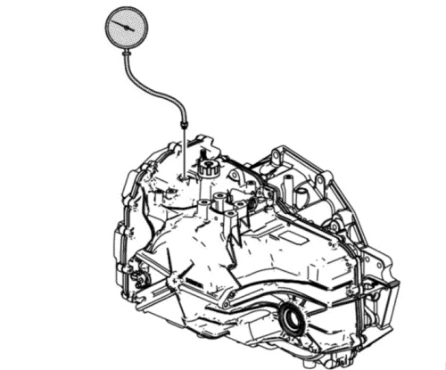
Herramientas necesarias
Precaución: Mantenga el freno puesto en todo momento para evitar cualquier movimiento inesperado del vehículo. Si el vehículo se mueve de forma inesperada podrían provocarse daños personales.
- Instale un scanner.
- Ponga el motor en marcha.
- Compruebe si el nivel de líquido de la transmisión es el adecuado. Consulte Comprobación del líquido de la transmisión.
- Utilice el scanner para comprobar si existe algún código de avería de diagnóstico almacenado o activo.
- Compruebe si la conexión manual en la transmisión funciona correctamente.
- Apague el motor.
- Retire el tapón del orificio de comprobación de presión de línea.
- Instale el J 21867.
- Acceda a los controles de salida de la transmisión del scanner de la solenoide de PC de conducto.
- Ponga el motor en marcha.
Importante: Para obtener lecturas de presión de conducto precisas, debe realizar el siguiente procedimiento un mínimo de 3 veces para recopilar lecturas de presión uniformes. El scanner solo puede controlar la solenoide de PC de línea en ESTACIONAMIENTO o PUNTO MUERTO con regímenes de motor inferiores a 1.500 rpm. Esto protege al embrague de presiones de línea muy altas o bajas.
- Utilice el scanner para incrementar o disminuir la presión de la solenoide de PC de línea en incrementos de aproximadamente 100 KPa (15 psi). El scanner solicita los valores de incremento automáticamente.
- Deje que la presión se estabilice entre incremento e incremento.
- Compare las lecturas de presión del scanner con las indicadas en el J 21867.
- Si las lecturas de presión varían significativamente, consulte la tabla Presión del líquido alta o baja.
- Apague el motor.
- Desmonte el J 21867.
- Instale el tapón del orificio de comprobación de presión de línea.
Apretar
Apriete el tapón de del orificio de comprobación de presión a 12 N•m (106 lb-pulg).
prueba en carretera
La siguiente prueba es un método de evaluación del estado de la transmisión automática. La prueba está estructurada de tal modo que se pueden alcanzar la mayoría de condiciones de conducción. La prueba consta de las siguientes partes:
- Comprobación del funcionamiento eléctrico
- Control del cambio a velocidad superior y aplicación del convertidor de par (TCC)
- Cambios parciales a velocidad inferior del acelerador
- Cambios descendentes manuales
- Cambios descendentes durante la marcha por inercia
- Selección de la gama de velocidades manuales
- MARCHA ATRÁS
- Control de cambios del conductor
Importante: Realice la prueba en la secuencia indicada. Si no se finaliza la prueba, no se puede garantizar una evaluación precisa.
Antes de realizar la prueba en carretera, asegúrese de lo siguiente:
Durante la prueba en carretera:
- Realice la prueba solo cuando el estado del trafico lo permita.
- Conduzca el vehículo de forma controlada y segura.
- Respete todas las normas de circulación.
- Mire el scanner mientras lleva a cabo esta prueba. Hágase acompañar de una persona cualificada para conducir el vehículo de forma segura.
- Esté atento a cualquier sonido u olor extraño.
Después de la prueba en carretera, compruebe lo siguiente:
- Compruebe si el nivel de líquido de la transmisión es correcto. Consulte Comprobación del líquido de la transmisión.
- Compruebe si hay algún código de diagnóstico de avería (DTC) que haya podido registrarse durante la prueba. Consulte la tabla de DTC específica.
- Permanezca atento a cualquier dato o lectura inesperada en el scanner.
- Compruebe si hay fugas de liquido. Consulte Diagnóstico de fugas de líquido.
Comprobación del funcionamiento eléctrico
Realice primero este procedimiento para asegurarse de que los componentes electrónicos de la transmisión funcionan correctamente. Si no comprueba los componentes, una simple avería eléctrica puede ser mal diagnosticada.
- Conecte el scanner.
- Asegúrese de que el selector de velocidades está en ESTACIONAMIENTO y que el freno de estacionamiento está puesto.
- Ponga el motor en marcha.
- Compruebe que se pueden obtener los siguiente datos del scanner y que este funciona correctamente. Consulte Lista de datos del scannerpara valores de datos típicos. Si los datos son cuestionables es posible que haya algún problema.
- Velocidad del motor
- ISS de transmisión
- Sensor de la velocidad de salida (OSS) de la transmisión
- VELOCIDAD DEL VEHÍCULO
- Interruptor de modo interno (IMS)
- Marcha solicitada
- Relación de cambio
- Sol. de PC del conducto Presión solic.
- Interruptor del freno del TCC
- ETC, Lista de datos del motor
- Temperatura del líquido de la transmisión
- Temperatura del TCM
- Posición del acelerador calc.
- Tensión de encendido
- Interruptor A de TFP
- Interruptor C de TFP
- Interruptor D de TFP
- Interruptor E de TFP
- Solicitud de presión de la sol. 2 de PC
- Solicitud de presión de la sol. 3 de PC
- Solicitud de presión de la sol. 4 de PC
- Solicitud de presión de la sol. 5 de PC
- Solenoide de cambio
- Solenoide de PC TCC Ciclo de trabajo
- Velocidad de deslizamiento del TCC
- Observe el parámetro del interruptor de freno del TCC mientras pisa y suelta el pedal de freno. El scanner debería mostrar:
- Abierto cuando el pedal de freno esté pisado.
- Cerrado cuando suelte el pedal de freno.
- Compruebe los cambios Garage.
-
- 1) Pise el pedal de freno y asegúrese de que el freno de estacionamiento está puesto.
- 2) Mueva el selector de velocidades por las siguientes gamas:
-
- i) ESTACIONAMIENTO a MARCHA ATRÁS
- ii) MARCHA ATRÁS a PUNTO MUERTO
- iii) PUNTO MUERTO a DIRECTA
-
- 3) Mantenga el selector 2 o 3 segundos en cada posición.
- 4) Compruebe que el acoplamiento de las marchas es inmediato y suave.
Importante: Hay varios motivos que pueden provocar que el acoplamiento no sea suave:
- Velocidad de ralentí del motor alta - Compare la velocidad de ralentí del motor con la velocidad de ralentí deseada.
- Corriente de la solenoide PC baja solicitada-Investigar Sol. PC Presión solic. KPa (psi) para todas las solenoides. Si la presión es alta provocará que el cambio esté duro.
- Una condición predeterminada causada por ciertos DTC que provocan máxima presión de línea para evitar que el embrague patine.
Importante: Hay varios motivos que pueden provocar que el acoplamiento esté desfasado o que sea suave:
- Velocidad de ralentí baja - Compare la velocidad de ralentí del motor con la velocidad de ralentí deseada.
- Nivel bajo del líquido
- Corriente de la solenoide PC alta solicitada-Investigar Sol. PC Presión solic. KPa (psi) para todas las solenoides. Si la presión es baja provocará cambios desfasados o suaves.
- Baja temperatura del líquido de la transmisión (TFT) - Utilice el scanner para determinar la TFT.
- Varillaje del selector - Compruebe y ajuste según convenga.
- Observe la gama de transmisión en el scanner, lista de datos del motor.
- Pise el pedal del freno y asegúrese de que el freno de estacionamiento está aplicado.
- Mueva el selector de velocidades por todas las gamas:
- Mantenga el selector 2 o 3 segundos en cada posición.
- Coloque el selector de velocidades en ESTACIONAMIENTO.
- Compruebe que todas las posiciones del selector coinciden con lo que muestra el scanner.
- Compruebe la entrada de posición del acelerador.
- Pise el pedal del freno y asegúrese de que el freno de estacionamiento está aplicado.
- Asegúrese de que el selector de velocidades está en ESTACIONAMIENTO.
- Observe la posición del acelerador calculada del scanner mientras aumenta y disminuye el régimen del motor con el pedal del acelerador. El porcentaje de la posición del acelerador calculada del scanner debería aumentar y disminuir con el régimen del motor.
Si cualquiera de las comprobaciones anteriores no ofrece resultados correctos, almacene los resultados para tenerlos como referencia después de realizar la prueba en carretera.
Control del cambio a velocidad superior y aplicación del convertidor de par (TCC)
El TCM calcula los puntos de cambio a velocidad superior basándose principalmente en dos datos: la posición del acelerador y la velocidad del vehículo. Cuando el TCM determina que se dan las condiciones para que se produzca un cambio, el TCM solicita el cambio abriendo o cerrando el circuito a tierra de la solenoide apropiada.
Siga los siguiente pasos:
- Consulte la tabla Velocidad de cambio de esta sección y elija una posición del acelerador del 12,5% o 25%. Todas las posiciones del acelerador mostradas deberían comprobarse para cubrir la gama de conducción normal.
- Observe los siguientes parámetros del scanner:
- Posición del acelerador calc.
- VELOCIDAD DEL VEHÍCULO
- Velocidad del motor
- ISS de transmisión
- Sensor de la velocidad de salida (OSS) de la transmisión
- Marcha solicitada
- Solenoide de PC TCC Presión solic.
- Presión real de TCC
- Velocidad de deslizamiento del TCC
- Interruptor A de TFP
- Interruptor C de TFP
- Interruptor D de TFP
- Interruptor E de TFP
- Solicitud de presión de la sol. 2 de PC
- Solicitud de presión de la sol. 3 de PC
- Solicitud de presión de la sol. 4 de PC
- Solicitud de presión de la sol. 5 de PC
- Solenoide de cambio
- Coloque el selector de velocidades en posición DIRECTA.
- Acelere el vehículo utilizando la posición del acelerador deseada. Ejerza una presión estable sobre el acelerador.
- Cuando la transmisión cambie a velocidad superior, debería notar una sensación de cambio o cambio de régimen del motor en 1 o 2 segundos después de haber cambiado a la marcha solicitada. Es posible que no observe la actuación del TCC. Trate de obtener un cambio de régimen del motor de 100-300 rpm.
- Compare las velocidades de cambio con la tabla de "Velocidad de cambio". Consulte el apartado Velocidad de cambio. Las velocidades de cambio pueden variar ligeramente debido a la TFT o a otras variables de funcionamiento, incluyendo retardos hidráulicos en la respuesta a los controles electrónicos.
- Observe cambios desfasados, suaves o bruscos o patinajes.
- Observe cualquier ruido o vibraciones.
Importante: Esta transmisión está equipada con un embrague de capacidad de control electrónico (ECCC), que no permite al embrague bloquearse por completo en la tapa del convertidor de par. El embrague mantiene una pequeña cantidad de deslizamiento, aproximadamente 20 rpm, en 2ª,3ª,4ª,5 y 6ª marcha, según el uso del vehículo. El ECCC se desarrolló para reducir la posibilidad de ruidos o tirones provocados por la aplicación del TCC. El bloqueo total está disponible a velocidades muy elevadas en algunas aplicaciones.
Importante: El TCC no se acoplará hasta que el motor no esté en funcionamiento de bucle cerrado y la velocidad del vehículo no sea superior a la velocidad calibrada. El vehículo debe registrar una velocidad próxima a la de crucero, sin acelerar ni circular con el motor desembragado, y estar sobre un superficie de carretera nivelada.
- Observe la corriente de la solenoide de PC del TCC mientras conduce y asegúrese de que aumenta la corriente cuando se conecta el TCC.
- Cuando se aplica el TCC debería apreciarse una caída notable en el régimen del motor y una caída en la velocidad de deslizamiento hasta por debajo de de 100 rpm. Si no se detecta la aplicación del TCC:
- Pise y suelte el pedal del freno. El TCC se liberará en la mayoría de aplicaciones.
Cambio parcial a velocidad inferior del acelerador
- Coloque el selector de velocidades en posición DIRECTA.
- Acelere el vehículo hasta 64-88 km/h (40-55 mph) en 6ª.
- Aumente rápidamente el ángulo del acelerador hasta 25-30%.
- Compruebe lo siguiente:
- El TCC se libera.
- La transmisión cambia a velocidad inferior inmediatamente.
Cambios descendentes manuales
No es necesaria la comprobación de cambio a velocidad inferior manual en los vehículos equipados con Control de cambios de conductor (DSC). El TCM y las solenoides de cambio anularán automáticamente los cambios a velocidad inferior del DSC para evitar daños en la transmisión.
Cambios descendentes durante la marcha por inercia
- Coloque el selector de velocidades en posición DIRECTA.
- Acelere el vehículo hasta 6ª con el TCC aplicado.
- Suelte el acelerador y pise el acelerador.
- Compruebe lo siguiente:
- El TCC se libera (en la mayoría de aplicaciones).
- Los cambios a velocidad inferior se llevan a cabo cuando se solicitan.
Marcha atrás
Realice la siguiente prueba con la posición del acelerador en 10-15%.
- Con el vehículo detenido, mueva el selector de velocidades a MARCHA ATRÁS.
- Acelere lentamente.
- Compruebe que no haya deslizamiento, ruido o vibraciones.
Control de cambios del conductor (DSC)/Selección de gama electrónica (ERS)
Consulte el manual del propietario para obtener instrucciones específicas sobre DSC/ERS. El TCM cambiará a velocidad superior automáticamente cuando se alcance el régimen máximo del motor y protegerá de cualquier cambio a velocidad inferior que pueda causar rpm excesivas en el motor.
Diagnóstico del convertidor de par
Estátor del convertidor de par
El embrague de rodillo del estátor del convertidor de par puede sufrir 2 fallos diferentes.
- El conjunto del estátor gira libremente en ambas direcciones.
- El conjunto del estátor permanece bloqueado en ambas direcciones.
Mala aceleración a baja velocidad - El embrague de rodillo del estátor gira libre todo el tiempo
Si el estátor gira libremente en todo momento, el vehículo tiende a tener una mala aceleración desde la posición de parada y a velocidades inferiores a 48-55 km/h (30-34 mph). A velocidades superiores a 48-55 km/h (30-34 mph), el vehículo puede responder correctamente. Si detecta una mala aceleración a baja velocidad, primero debería determinar que el sistema de escape no está bloqueado y que la transmisión está en 1ª al arrancar. Si el motor acelera libremente hasta altas rpm en PUNTO MUERTO, se entiende que el motor y el sistema de escape funcionan correctamente. Compruebe si el funcionamiento en DIRECTA y MARCHA ATRÁS es defectuoso para determinar si el estátor gira libremente en todo momento.
Mala aceleración a alta velocidad - El embrague de rodillo del estátor está bloqueado todo el tiempo
Si el estátor está bloqueado todo el tiempo, el funcionamiento es normal cuando se acelera desde la posición de parada. Las rpm del motor y el régimen del motor están limitados o restringidos a velocidades superiores a 48-55 km/h (30-34mph). Un examen visual del convertidor puede dejar a la vista un color azul resultado del sobrecalentamiento.
Ruido del estátor del convertidor de par
Importante: No confunda este ruido con el chirrido de la bomba, que normalmente se aprecia en todas las gamas de marcha. El chirrido de la bomba variará con la presión de línea.
El chirrido del convertidor de par se aprecia cuando el vehículo está parado y la caja de cambios está en DIRECTA o MARCHA ATRÁS. Este ruido aumentará a medida que aumenten las rpm del motor. El ruido desaparecerá cuando el vehículo esté en movimiento o cuando aplique el embrague del convertidor de par, porque las dos mitades del convertidor giran a la misma velocidad. Realice una prueba de calado del motor para asegurarse de que el ruido procede realmente del convertidor de par:
- Ponga el pie sobre el freno.
- Coloque el selector de velocidades en DIRECTA.
Aviso: Puede dañar la transmisión si pisa el acelerador durante más de 6 segundos.
- Pise el acelerador hasta llegar aproximadamente a las 1.200 rpm durante no más de seis segundos.
El ruido en el convertidor de par aumentará bajo esta carga.
Embrague del convertidor de par
El embrague del convertidor de par (TCC) se aplica mediante la presión del líquido, que controla una solenoide de control de presión (PC) del TCC. Esta solenoide forma parte del conjunto de válvulas solenoides de control, situado dentro del conjunto de la caja de cambios automática. La solenoide se controla a través de una combinación de interruptores y sensores controlados por ordenador.
Sacudidas del embrague del convertidor de par
La clave para diagnosticar sacudidas del embrague del convertidor de par es notar cuando y bajo que circunstancias se producen. Las sacudidas del TCC solo deberían ocurrir mientras se aplica o se suelta el embrague del convertidor. Las sacudidas nunca deberían ocurrir después de haberse aplicado por completo el plato del TCC.
Si la sacudidas ocurren mientras se aplica o se suelta el TCC
Si las sacudidas se producen mientras esté aplicado el TCC, el problema puede residir en la caja de cambios o en el convertidor de par. Algo está provocando una de las siguientes situaciones:
- El embrague no se está acoplando por completo.
- El embrague no se está liberando por completo.
- El embrague se está liberando y aplicando de manera rápida y continua.
Una de las siguientes situaciones puede estar causando las sacudidas del TCC:
- El eje de la turbina/las juntas del TCC tienen una fuga
- Un orificio de liberación de tamaño limitado
- Un embrague o superficie de la carcasa deformado debido al uso de tornillos del convertidor al volante motor largos
- Material de fricción defectuoso en el plato del TCC
Si las sacudidas se producen después de que la aplicación del TCC
Importante: Algunas transmisiones están equipadas con un embrague de capacidad controlado electrónicamente (ECCC), que no permite al embrague bloquearse por completo en la tapa del convertidor de par. El embrague mantiene una pequeña cantidad de deslizamiento, aproximadamente 20 rpm, en 2ª,3ª,4ª,5 y 6ª, según el uso del vehículo. El ECCC se desarrolló para reducir la posibilidad de ruidos o tirones provocados por la aplicación del TCC. El bloqueo total solo está disponible a velocidades muy elevadas en algunas aplicaciones.
Si hay sacudidas después de aplicar el TCC, en la mayoría de ocasiones no hay ningún problema con la transmisión. No es probable que el TCC patine después su aplicación. Los problemas de motor pueden pasar desapercibidos cuando el acelerador se pisa suavemente el acelerador o se transporta carga ligera, no obstante son fácilmente detectables después de aplicar el TCC cuando se asciende una pendiente o se acelera. Esto es debido al acoplamiento mecánico entre el motor y la transmisión.
Importante: El TCC no se acopla hasta que el motor no esté en funcionamiento de bucle cerrado y el vehículo debe registrar una velocidad próxima a la de crucero, sin acelerar ni circular con el motor desembragado, y estar sobre un superficie de carretera nivelada.
Una vez aplicado el TCC, no hay asistencia (en el acoplamiento de líquido) del convertidor de par. Las vibraciones del motor o del sistema de transmisión pueden pasar desapercibidas antes de la aplicación del TCC. Consulte la tabla "Controles-diagnóstico del motor" para evitar diagnósticos equivocados de la sacudidas del TCC y un desensamblaje innecesario de una transmisión o la sustitución innecesaria de un convertidor de par.
Prueba de vibraciones del convertidor de par
Importante: El procedimiento de Análisis de ruidos y vibraciones debería realizarse antes de realizar esta prueba. Realice la Prueba de vibraciones del convertidor de par.
Aislamiento de las vibraciones
Importante: Algunas combinaciones de motor/transmisión no pueden equilibrarse de esta manera debido al acceso restringido o la separación limitada entre los tornillos del convertidor de par y el motor.
Para aislar y corregir las vibraciones del volante motor o del convertidor de par, separe el convertidor de par del volante motor para determinar si las vibraciones están en el motor o en la transmisión.
- Con el motor en ralentí y la caja de cambios en ESTACIONAMIENTO o PUNTO MUERTO y observe las vibraciones.
- Apague el motor.
- Levante y apoye el vehículo adecuadamente.
- Retire la tapa de acceso al convertidor de par y los tornillos (si están instalados).
- Marque la relación del convertidor de par con el volante motor.
- Retire los tornillos que sujetan el convertidor al volante motor.
- Separe el convertidor de par del volante motor.
- Gire el volante motor y el convertidor de par para comprobar si hay defectos o faltan contrapesos de equilibrio.
- Baje el vehículo.
- Con el motor en ralentí y la caja de cambios en ESTACIONAMIENTO o PUNTO MUERTO y observe las vibraciones.
- Apague el motor.
- Si las vibraciones continúan, es muy probable que sean causadas por el motor.
- Instale el convertidor en los tornillos del volante motor.
Apretar
Apriete a 45 N•m (33 lb-pie).
Aviso: Cuando instale el convertidor de par en el volante motor, asegúrese de que utiliza los tornillos específicos. NO UTILICE tornillos más largos. Si utiliza tornillos más largos puede provocar la deformación de la tapa de convertidor de par y provocar daños internos.
- Si las vibraciones desaparecen o cambian, realice el procedimiento de "Indexado del convertidor de par".
Indexado del convertidor de par
Para determinar y corregir las vibraciones del convertidor de par, es posible que deba realizar el siguiente procedimiento varias veces con el objetivo de conseguir el mejor equilibrio posible entre el convertidor de par y el volante motor.
- Levante y apoye el vehículo adecuadamente.
- Gire el convertidor de par una posición de tornillo desde su posición marcada original.
- Alinee el cubo del convertidor de par (2) en el cigüeñal del motor (3) e instale el convertidor de par en los tornillos del volante motor.
Apretar
Apriete a 45 N•m (33 lb-pie).
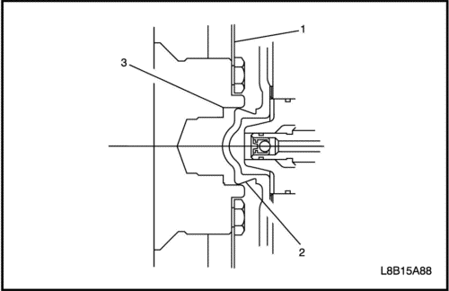
- Baje el vehículo.
- Con el motor en ralentí y la caja de cambios en ESTACIONAMIENTO o PUNTO MUERTO y observe las vibraciones.
- Repita este procedimiento hasta obtener el mejor equilibrio posible.
- Si las vibraciones no se reducen después de rotar el convertidor de par 360 grados, sustituya el conjunto del convertidor de par.
- Instale la tapa de acceso al convertidor de par y los tornillos (si están instalados).
Apretar
Apriete a 12 N•m (9 lb-pie).
Guía de sustitución del convertidor de par
NO SUSTITUYA el convertidor de par si detecta los siguientes síntomas.
|
Estado
|
Medida
|
- Líquido de transmisión oxidado/descolorido
- No hay residuos metálicos
- Material de fibra del embrague
|
No sustituya el convertidor de par.
|
|
Líquido de transmisión contaminado con partículas metálicas
|
Importante: No sustituya el convertidor de par si detecta daños en componentes del juego de engranajes o del sistema de embrague. Pequeños residuos metálicos o material del plato del embrague suspendidos en el líquido no provocan daños en los componentes del convertidor de par internos ni en los componentes internos de la transmisión.
|
|
Cambios de velocidad bruscos - TCC no aplicado
|
No sustituya el convertidor de par.
|
|
Ruido-chirrido
|
|
|
Vibraciones-Desequilibrado
|
Consulte la sección "Prueba de vibraciones del convertidor de par" en este procedimiento
|
|
No entra la Directa/Patinaje en Directa-TCC no aplicado
|
No sustituya el convertidor de par hasta finalizar todos los diagnósticos del motor y de la transmisión.
|
|
Repunte/ralentí irregular
|
No sustituya el convertidor de par.
|
|
Sacudidas al aplicar/soltar el TCC.
|
No sustituya el convertidor de par.
Consulte la sección "Sacudidas del embrague del convertidor de par" en este procedimiento.
|
|
Tirones del TCC
|
No sustituya el convertidor de par.
|
|
DTC P0741-TCC bloqueado en posición de liberación/deslizamiento elevado-solo intermitente
|
No sustituya el convertidor de par.
|
|
DTC P0741-TCC bloqueado en posición de liberación/deslizamiento elevado
|
No sustituya el convertidor de par.
|
|
DTC P0742-TCC bloqueado en posición de aplicación
|
No sustituya el convertidor de par.
|
|
DTC P1887- Disyuntor del TCC
|
No sustituya el convertidor de par.
|
|
Mala aceleración por encima de 48 km/h (30 mph) - Buena aplicación
|
No sustituya el convertidor de par hasta finalizar todos los diagnósticos del motor y de la transmisión.
|
|
Mala aplicación - Buena aceleración por encima de 48 km/h (30 mph)
|
No sustituya el convertidor de par hasta finalizar todos los diagnósticos del motor y de la transmisión.
|
Sustituya el convertidor de par si detecta los siguiente síntomas.
|
Estado
|
Medida
|
|
Orificios de los tornillos de convertidor estriados
|
Sustituya el convertidor de par.
|
|
Piloto del convertidor de par dañado
|
Sustituya el convertidor de par.
|
|
La superficie del cubo del convertidor de par está dañada - estriada, metal elevado/transferido
|
Sustituya el convertidor de par.
|
|
Abombamiento del convertidor de par
|
Sustituya el convertidor de par.
|
|
Fugas externas en las zonas de soldadura - cubo, tuerca de fijación o soldadura de cierre.
|
Sustituya el convertidor de par.
|
|
Volante motor roto/agrietado
|
Sustituya el convertidor de par.
|
|
Convertidor de par descolorido/sobrecalentado
|
Sustituya el convertidor de par.
|
Diagnóstico del plato de embrague
Platos de material compuesto
Seque los platos y compruebe si se observan las siguientes condiciones:
- Picado
- Desescamado
- Exfoliación-desdoblamiento o separación del material del embrague ligado
- Desgaste
- Aspecto vidrioso
- Grietas
- Carbonizado
- Virutas o partículas de metal incrustadas en los forros
Sustituya el plato de material compuesto que muestre cualquiera de estas deficiencias.
Platos de acero
Seque los platos con un trapo y compruebe si se han decolorado por el calor. Si las superficies están lisas, incluso si se observan manchas de color, se puede seguir utilizando el plato. Si se decolora el plato por el calor en algunas zonas o si la superficie está rayada, sustituya el plato.
Causas de platos de embrague quemados
Lo siguiente pueden provocar que se quemen los platos de embrague:
- Uso incorrecto del embrague o de los platos de aplicación
- Existencia de refrigerante o agua en el líquido de la transmisión
- Un pistón del embrague agrietado
- Retenes dañados o pérdida de los mismos
- Baja presión de funcionamiento.
- Estado del cuerpo de la válvula
- La cara del cuerpo de la válvula no está plana.
- Porosidad entre canales.
- Los retenes del tren de válvulas están instalados incorrectamente.
- Las bolas antirretorno están mal colocadas.
- Las juntas de teflón® están desgastadas o dañadas.
Refrigerante del motor/agua en la transmisión
Aviso: El anticongelante o el agua deteriorarán los retenes, las juntas y la cola que une el material del embrague a la placa de presión. Ambas situaciones pueden provocar daños en la transmisión.
Si ha entrado anticongelante o agua en la transmisión, siga los siguientes pasos:
- Desmonte la transmisión.
- Sustituya todas las juntas de goma. El refrigerante corroe el material de las juntas y esto ocasionará fugas.
- Sustituya los conjuntos de plato de embrague revestidos de material compuesto. El material de revestimiento puede estar separado de la parte central de acero.
- Sustituya todas las piezas de nailon - arandelas.
- Sustituya el convertidor de par.
- Limpie concienzudamente y monte de nuevo la caja de cambios, utilizando juntas y un filtro de aceite nuevos.
- Limpie los conductos de refrigeración después de reparar o sustituir el refrigerador de la transmisión.
- Compruebe si la parte de goma de los conductos de refrigeración de aceite presenta daños, si es aplicable. Consulte "Prueba de descarga y flujo de refrigerante de aceite de la transmisión automática".
Diagnóstico de fuga de líquido
Método general
- Verifique si la fuga es de líquido de la transmisión.
- Limpie a fondo el área con supuestas fugas.
- Conduzca el vehículo durante 24 Km (15 millas) o hasta que se alcancen temperaturas de funcionamiento normales.
- Estacione el vehículo sobre un cartón o papel limpio.
- Apague el motor.
- Busque manchas de líquido en el papel.
- Haga las reparaciones necesarias.
Método de pulverización
- Limpie a fondo con disolvente el área con supuestas fugas.
- Aplique polvo de rastreo de fugas en aerosol en la zona donde se sospecha que hay una fuga.
- Conduzca el vehículo durante 24 Km (15 millas) o hasta que se alcancen temperaturas de funcionamiento normales.
- Apague el motor.
- Compruebe la zona donde se sospecha que hay una fuga.
- Busque la trayectoria de la fuga a través del polvo para encontrar la fuente de la misma.
- Haga las reparaciones necesarias.
Método del tinte y la luz negra
Varios fabricantes de herramientas disponen de un tinte líquido y un kit de luz negra.
- Siga las instrucciones del fabricante para determinar la cantidad de tinte que se debe usar.
- Conduzca el vehículo durante 24 Km (15 millas) o hasta que se alcancen temperaturas de funcionamiento normales.
- Detecte la fuga con la luz negra.
- Haga las reparaciones necesarias.
Búsqueda del motivo de la fuga
Localice la fuga y siga la trayectoria de la misma hasta la fuente. Debe determinar la causa de la fuga para poder repararla correctamente. Por ejemplo, si sustituye una junta pero la pestaña sellante está doblada, la nueva junta no reparará la fuga. Deberá también reparar la pestaña doblada. Antes de tratar de reparar una fuga, compruebe si se dan las siguientes condiciones y haga las reparaciones convenientes:
Juntas
- Nivel/presión del líquido demasiado alto.
- Ventilación obstruida u orificios que no drenan correctamente
- Elementos de sujeción mal apretados
- Roscas sucias o dañadas
- Bridas o superficie sellante deformada
- Rayas, rebabas u otro tipo de daños en la superficie sellante
- Junta dañada o desgastada
- Porosidad o agrietamiento del componente
- Uso de sellante inadecuado, donde sea necesario
- Junta incorrecta
retenes, juntas de estanqueidad
- Nivel/presión del líquido demasiado alto.
- Ventilación obstruida u orificios que no drenan correctamente
- Camisa de la junta dañada
- Junta dañada o desgastada
- montaje incorrecto
- Grietas en componente
- Superficie del eje manual o del palier rayada, arañada o dañada
- Cojinete flojo o desgastado que provoca un desgaste excesivo de las juntas
Posibles puntos de fuga de líquido
Carcasa de la transmisión y/o tapa del cuerpo de la válvula
- Tornillos apretados de forma incorrecta
- Junta dañada o mal instalada
- Cara de fijación dañada
- Junta incorrecta
Fuga de la carcasa
- Junta del sensor de velocidad de entrada dañada
- Junta del eje manual dañada
- Juntas/conductos del refrigerador de aceite dañados o sueltos
- Junta de aceite del palier dañada o desgastada
- Tapón del tubo de presión de línea o tapón del tubo del nivel de líquido suelto
- Fundición porosa
- Carcasa del convertidor de par deformada
- Carcasa del convertidor a la junta de la carcasa dañada
Fuga en el extremo del convertidor de par
- Fuga del convertidor en la zona de soldadura
- Corte en el borde de la junta del convertidor. Compruebe si el cubo del convertidor está dañado
- El casquillo de la junta del convertidor se ha movido hacia delante y está dañado
- Falta muelle toroidal de la junta del convertidor en la junta
- Fundición porosoa en la carcasa del convertidor de par
Fuga en la ventilación
- Sistema excesivamente lleno
- Agua o refrigerante en el líquido; el líquido tiene un aspecto lechoso
- Carcasa de la transmisión porosa
- El indicador del nivel de líquido incorrecto provoca un sistema excesivamente lleno
- Ventilación obstruida
Puntos de control de fugas
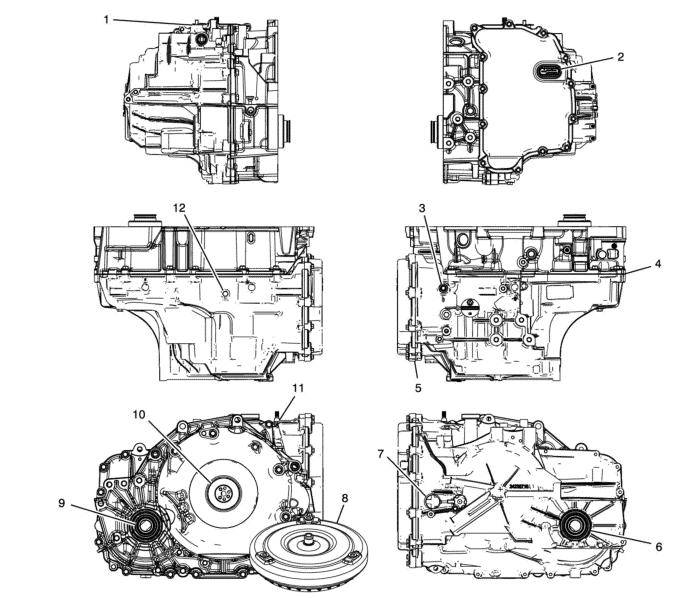
- Junta del tapón de llenado
- Junta del orificio de la tapa del cuerpo de la válvula de control
- Tapón roscado de presión del conducto
- Carcasa del convertidor a junta de la carcasa
- Junta de la tapa del cuerpo de la válvula de control
- Conjunto de la junta hermética de aceite del eje de accionamiento
- Junta tórica del conjunto del sensor de velocidad de entrada de la caja de cambios automática
- Conjunto del convertidor de par
- Conjunto de la junta de aceite del eje de accionamiento de las ruedas delanteras
- Conjunto de la junta del líquido del convertidor de par
- Junta del eje del cambio manual
- tapón de drenaje(tapón de vaciado)
Reparación de porosidad de la caja
La causa de algunas fugas externas es la porosidad de la carcasa en zonas no presurizadas.
- Limpie a fondo el área que se va a reparar con un disolvente de limpieza. Seque la zona con aire.
Precaución: El epoxi adhesivo puede provocar irritación cutánea y daños oculares. Lea y siga todas las instrucciones que aparecen en la etiqueta del envase del fabricante.
- Siguiendo las instrucciones del fabricante, mezcle una cantidad suficiente de epoxi para llevar a cabo la reparación.
- Aplique el epoxi. Se puede utilizar un cepillo de ácido de soldadura seco para limpiar la zona y aplicar el cemento epoxídico. El área que va a reparar debe quedar totalmente cubierta.
- Deje que el cemento epoxídico se endurezca durante tres horas antes de ensamblar los componentes.
- Repita los procedimientos de diagnóstico de fugas de líquido.
Prueba de descarga y flujo de refrigerante de aceite de la transmisión automática
Los estudios de GM indican que los refrigerantes de aceite y conductos de la transmisión obstruidos o de paso limitado provocan una lubricación insuficiente en la transmisión y temperaturas de funcionamiento elevadas que pueden llevar a un desgaste prematuro de la transmisión. Se podrían haber evitado muchos casos de reparaciones recurrentes siguiendo los procedimientos publicados para la limpieza del refrigerador de aceite y comprobación del flujo. Este procedimiento incluye la comprobación del flujo y la limpieza del refrigerador de aceite de la transmisión auxiliar (si está instalado).
Importante: Utilice la herramienta J35944-A si la tiene o una equivalente que haya utilizado para vaciar el refrigerante de aceite de la transmisión y la línea del refrigerante de aceite, siempre que se desmonte la transmisión para las siguientes reparaciones:
- Convertidor de par
- Bomba de aceite
- Revisión completa de la transmisión
- Sustitución del conjunto de la transmisión
Cuando realice reparaciones en la transmisión, utilice el liquido de transmisión adecuado. Solo se debería utilizar líquido de la transmisión automática GM DEXRON®VI cuando se realice una reparación en una caja de cambios GM de seis (6) velocidades. Estos son los pasos del procedimiento de servicio para la limpieza del refrigerador de aceite:
Pasos de comprobación del flujo del refrigerador y limpieza
- Herramientas necesarias
- Preparación
- Lavar a contracorriente
- Limpieza hacia delante
- Comprobación del flujo
- Limpieza
Herramientas necesarias
- J 35944-A Sistema de descarga del refrigerante de aceite de la transmisión
- J 35944-22 Líquido de descarga de refrigerante de aceite de la transmisión
- J 35944-200 Adaptador para descarga de refrigerante
- Taza de medición
- Embudo
- Alimentación de agua, se recomienda el uso de agua caliente
- Manguito de agua, diám. int. mín. 16 mm (5/8 pulg)
- Alimentación de aire presurizado, con filtros de agua/aceite, regulador y manómetro
- Plato neumático, con clip si estuviera disponible
- Contenedor de vaciado de aceite
- Cubo con tapa 19 L (5 galones)
- Protección ocular
- Guantes de goma
Preparación
- Durante la instalación de la transmisión reparada o de sustitución, no conecte los tubos de refrigerante de aceite.
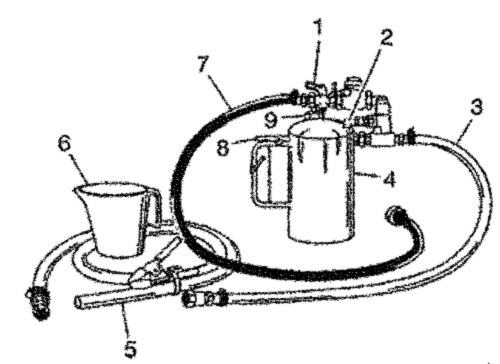
Aviso: No utilice soluciones que contengan alcohol o glicol. El uso de las soluciones que contienen alcohol o glicol puede dañar el sistema de descarga de la línea de refrigerante de aceite, los componentes de refrigerante de aceite y/o componentes de las transmisión.
Importante: El J 35944-22 es seguro medioambientalmente, aunque lo suficientemente potente para pasar por el líquido de la transmisión para extraer cualquier descontaminante del refrigerante. Las precauciones de seguridad en la etiqueta, al respecto de posibles irritaciones cutáneas y oculares asociadas a una exposición prolongada, son las típicas precauciones que se aplican a muchas soluciones de limpieza similares. Debería tenerse en cuenta que según GM, el uso de otros líquidos no autorizados para la descarga de refrigerante puede suponer una reacción adversa en las juntas del interior de la transmisión.
- Retire el tapón de llenado (9) del J 35944-A y llene el depósito del sistema de descarga (4) con 0,6 L (20-21 oz) de J 35944-22, utilizando la taza de medición (6). No llene en exceso.
- Coloque el tapón de llenado (9) en el J 35944-A y presurice el depósito del sistema de descarga (4) a 550-700 kPa (80-100 psi), utilizando el aire presurizado del taller en la válvula de aire del depósito (2).
- Con la válvula de suministro de agua (1) del J 35944-A desactivada, conecte el manguito de suministro de agua del J 35944-A a la alimentación de agua en el grifo.
- Active el suministro de agua en el grifo.
Lavar a contracorriente
- Revise los tubos del refrigerante de aceite de la transmisión por si hubiera retorcimientos o daños. Haga las reparaciones necesarias.
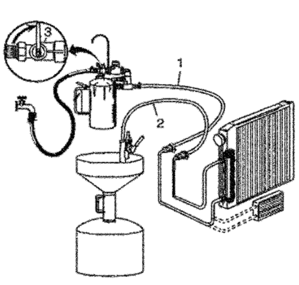
Conecte el J 35944-A al conector inferior de alimentación de refrigerante de aceite. Utilice el J 35944-200, si fuera necesario.
- Fije con clips el manguito de descarga (2) en el contenedor de vaciado de aceite.
- Acople el J 35944-A a los bajos del vehículo con el gancho suministrado y conecte el manguito de alimentación de descarga (1) del J 35944-A al tubo de retorno de refrigerante de aceite del conector superior. Utilice el J 35944-200, si fuera necesario.
- Active la válvula de alimentación de agua (3) J 35944-A y deje que pase el agua a través de los tubos de refrigerante de aceite durante 10 segundos para eliminar cualquier resto de líquido de transmisión. Si el agua no fluye a través de los tubos de refrigerante de aceite, la causa del bloqueo debe diagnosticarse y el componente conectado debe repararse o sustituirse. Continúe con la descarga de refrigerante y el procedimiento de comprobación de caudal una vez corregido el bloqueo.
- Desactive la válvula de suministro de agua (3) del J 35944-A y acople el manguito de descarga en un cugo con tapa de 19 litros (5 galones) para evitar salpicaduras.
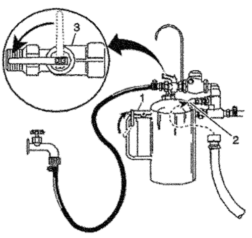
Importante: La descarga durante aproximadamente 2 minutos en cada dirección de la línea de refrigerante dará como resultado un total de 30-38 L (8-10 galones) de líquido de residuos. Esta combinación de agua y líquido de descarga debe capturarse en un cubo o contenedor similar.
- Active la válvula de suministro (3) del J 35944-A y pulse el activador (1) para mezclar la solución de descarga del refrigerante con el caudal de agua. Utilice el clip de la manilla para mantener pulsado el activador (1). La descarga provocará espuma cuando la solución se introduzca en la corriente de agua.
- Descargue el refrigerante de aceite y los tubos con agua y la solución durante 2 minutos. Durante esta situación de descarga, acople el aire de taller de 825 kPa (120 psi) a la válvula de aire de alimentación del sistema de descarga (2), situada en el J 35944-A, durante 3-5 segundos al final de cada intervalo de 15-20 segundos para crear una acción de subida de presión.
- Suelte el activador (1) y desactive la válvula de alimentación de agua del J 35944-A (3).
Limpieza hacia delante
- Desconecte ambos manguitos (1 y 2) de los tubos de refrigerante de aceite y conéctelos al tubo de refrigerante de aceite contrario. Esto permitirá que el refrigerante de aceite y los tubos puedan enjuagarse/descargarse en el sentido normal del caudal.
- Repita los pasos 6 y 7 del lavado a contracorriente.
- Suelte el activador (1) del J 35944-A y deje que el agua enjuague el refrigerante de aceite y los tubos durante 1 minuto.
- Desactive la válvula de alimentación de agua (3) del J 35944-A y corte la alimentación del agua al grifo.
- Acople la alimentación de aire de taller a la válvula de aire de alimentación del sistema de descarga (2) del J 35944-A y expulse el agua del refrigerante de aceite y los tubos. Continúe hasta que no salga agua del manguito de descarga.
prueba de flujo
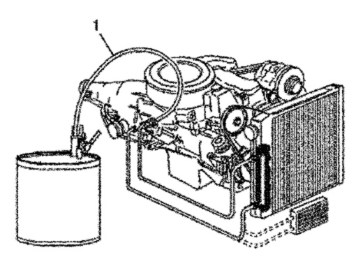
Importante: La Prueba de flujo debe realizarse después de la descarga para garantizar que toda la solución de descarga y el agua han sido retirados del sistema de refrigerante de aceite.
- Desconecte el manguito del tubo de refrigerante de aceite. Conecte el tubo de alimentación de refrigerante de aceite, el conector inferior, a la transmisión para lograr un flujo normal.
- Acople el manguito de descarga (1) a un contenedor vacío de aceite.
- Confirme que la transmisión está llena con líquido de transmisión automática. Consulte las Especificaciones de capacidad de líquido para conocer la capacidad correcta de líquido de la transmisión automática.
- Ponga en marcha el motor con la transmisión en la posición ESTACIONAMIENTO y déjelo en marcha durante 30 segundos una vez que el líquido comience a fluir desde el manguito de descarga (1). Debe descargarse un mínimo de 1,9 L (2 qt) durante este tiempo de funcionamiento de 30 segundos.
- Si el flujo de líquido alcanza o supera los 1,9 L (2 qt) en 30 segundos, conecte el tubo de alimentación de refrigerante de aceite al conector inferior de la transmisión.
- Si el flujo de líquido es inferior a 1,9 L (2 qt) en 30 segundos, lleve a cabo el siguiente procedimiento de diagnóstico:
- Desconecte la manguera de descarga (1) J 35944-A del tubo de retorno de refrigerante de aceite.
- Desconecte el tubo de alimentación de refrigerante de aceite del radiador.
- Conecte el manguito de descarga (1) J 35944-A al tubo de alimentación de refrigerante de aceite del radiador.
- Fije con clips el manguito de descarga (1) en el contenedor de vaciado de aceite.
- Ponga en marcha el motor con la transmisión en la posición ESTACIONAMIENTO y déjelo en marcha durante 30 segundos una vez que el líquido comience a fluir desde el manguito de descarga (1). Debe descargarse un mínimo de 1,9 L (2 qt) durante este tiempo de funcionamiento de 30 segundos.
- Si la cantidad del flujo de líquido de transmisión sigue siendo inferior a 1,9 L (2 qt) en 30 segundos, revise el tubo de alimentación de refrigerante de aceite, en el conector inferior, por si hubiera oclusiones o daños. Si no aparece ningún problema en el tubo de alimentación, en el conector inferior, revise la transmisión.
Limpieza
- Desconecte el manguito de alimentación de agua del J 35944-A y purgue cualquier presión de aire restante del depósito del sistema de descarga.
- Retire el tapón de llenado del J 35944-A y vuelva a verter toda la solución de descarga no utilizada en su contenedor. Enjuague el J 35944-A con agua. No guarde el J 35944-A con solución de descarga en su interior.
- Cada vez que lo utilice tres veces, limpie el J 35944-A tal y como se describe en las instrucciones que acompañan a la herramienta.
- Elimine cualquier resto de agua/solución residual y líquido de transmisión de acuerdo con las normas locales.
Control del eje de acoplamiento y los casquillos
Importante: Se debería realizar una inspección a fondo del casquillo y del correspondiente eje de acoplamiento antes de sustituir el casquillo, el eje y, en algunos casos, el componente que aloja al casquillo. Limpie a fondo y seque las superficies del casquillo y del eje antes de tratar de localizar cualquier avería.
Si el casquillo se encuentra en cualquiera de los siguientes condiciones, deberá sustituir el casquillo y/o su carcasa:
- Decoloración debido al calor
- El casquillo está mal alineado o desplazado como resultado de haber patinado en la carcasa
- Rayado de moderado a importante que se puede apreciar fácilmente con una uña. El rayado poco profundo es normal.
- Residuos incrustados en el material de revestimiento del casquillo
- Daños obvios, entre los que se incluyen desgaste desigual o excesivo
- Demasiado pulido. Un pulido leve del casquillo es una señal normal de desgaste y no es necesario su sustitución.
Cualquiera de las situaciones que aparecen a continuación requieren la sustitución del eje de acoplamiento del casquillo:
- Decoloración debido al calor
- Acabado aspero de la superficie que se puede apreciar fácilmente con una uña.
- Anomalías obvias del eje, incluidas superficies deformadas o irregulares
- Grietas o daños obvios
Análisis de vibraciones y ruidos
Un ruido o vibraciones perceptibles cuando el vehículo está en movimiento PUEDE NO estar relacionado con la transmisión.
Si los ruidos o vibraciones son perceptibles en ESTACIONAMIENTO y PUNTO MUERTO con el motor en ralentí, pero se reducen a medida que se incrementan las RPM, las vibraciones pueden ser producto de un mal funcionamiento del motor.
- Las vibraciones pueden estar causadas por una pequeña cantidad de agua en el interior del convertidor.
- Compruebe si hay daños o tornillos sueltos en las monturas de la transmisión y del motor.
- Compruebe si aparecen las siguientes anomalías en los orificios de montaje de la carcasa de la transmisión:
- Faltan tornillos, tuercas y espárragos
- Roscas estriadas
- Grietas
- Revise el volante motor y compruebe si existe alguna de las siguientes anomalías:
- Faltan tornillos o están sueltos
- Grietas
- Desequilibrio
- Revise el convertidor de par y compruebe si existen las siguientes anomalías:
- Faltan tornillos o tuercas de fijación o están sueltos
- Faltan contrapesos de equilibrio o están sueltos
- Desequilibrio causado por deformaciones por el calor o contaminación del líquido
- Si los ruidos o vibraciones son perceptibles en ESTACIONAMIENTO y PUNTO MUERTO con el motor en ralentí, pero aumentan a medida que se incrementan las RPM; las vibraciones pueden ser producto de un desequilibrio del motor o de la transmisión. Consulte Diagnóstico del convertidor de par.